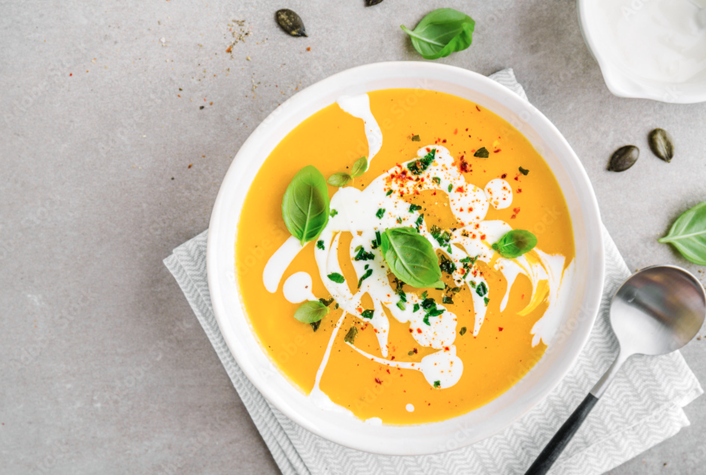

Soup Recipe
The perfect recipe for a soup

Description
This pumpkin soup is deliciously creamy and smooth. Tender onions and garlic give it depth of flavor, and it's
lovely seasoned with fresh herbs and spices. It's served at our family's Thanksgiving dinner every year.
Ingredients:
- 1 tablespoon olive oil
- 2 cups chopped yellow onion
- 10 whole black peppercorns
- 3 cups pumpkin puree
- ½ cup heavy whipping cream
- 4 cups chicken stock
Steps:
- Heat olive oil in a large pot over medium-high. Add onion and cook, stirring occasionally, until onion is
browned and softened, about 10 minutes. Add peppercorns, garlic, and thyme, and cook, stirring often, until
fragrant and slightly browned, about 2 minutes.
- Stir in pumpkin puree; cook, stirring occasionally, until puree turns a few shades darker, about 5 minutes.
Stir in chicken stock, maple syrup, salt, nutmeg, and cinnamon. Bring to a simmer over medium-low. Simmer,
uncovered, and stirring occasionally, until slightly reduced and flavors meld, about 30 minutes.
- Transfer soup to a blender in batches; secure lid on blender and remove center piece to allow steam to
escape. Place a clean towel over opening; blend until smooth, about 30 seconds per batch. Return soup to the
pot and stir in heavy cream. Cook over medium until heated through, about 4 minutes.
- Return soup to the pot and stir in heavy cream. Cook over medium until heated through, about 4 minutes.
- Ladle soup into bowls and garnish with fresh parsley.